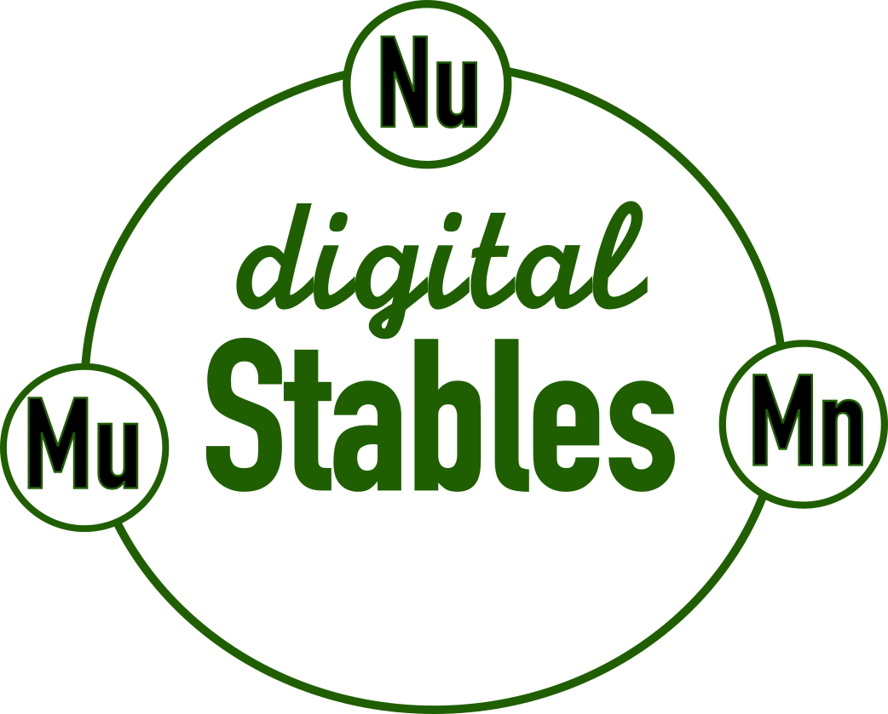
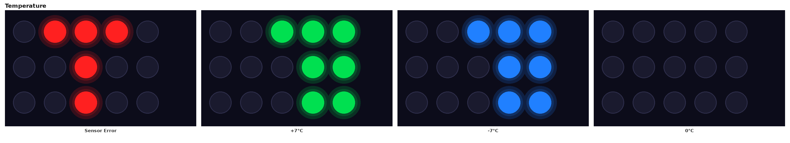
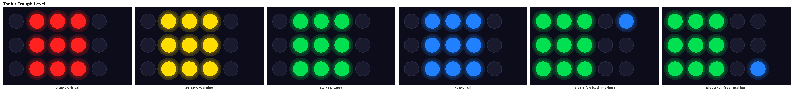
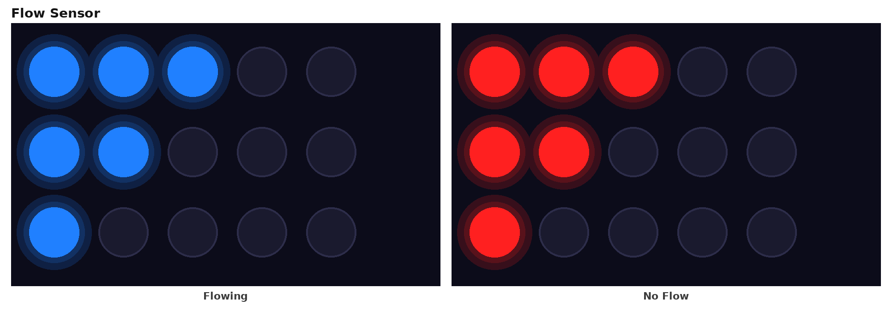
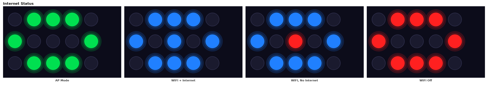
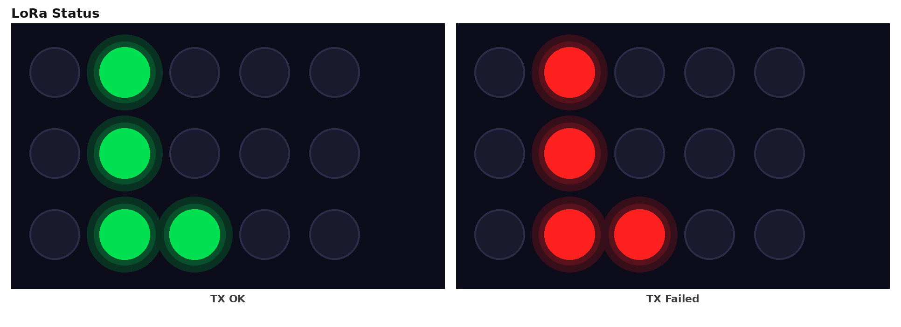
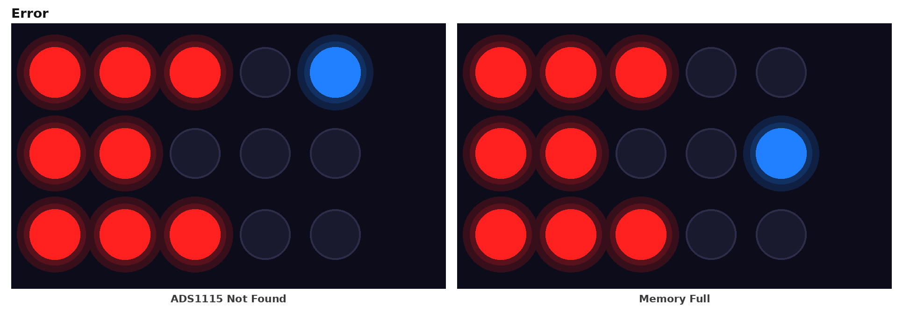
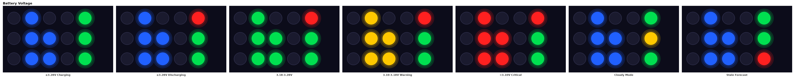

Daffodil watches water for you. It reads water troughs, tanks, septic tanks, water flow and water temperature, then reports to Digital Stables over WiFi and to nearby units over LoRa radio. It runs on solar power and a battery.
Everything you need to set up is on the lower edge of the board:
| Part | What it does |
|---|---|
| 18 / 33 terminal | The signal wires of your sensors go here. Terminal 18 is sensor 1 and terminal 33 is sensor 2. |
| V50 / GND terminal | Powers your sensors. Every sensor's + wire goes to V50 and its − wire goes to GND. When two sensors are connected, both + wires share V50 and both − wires share GND. |
| 18 and 33 jumpers (marked "Digital Analog") | Each sensor terminal has two small 2-pin headers, one labelled Digital and one labelled Analog. Put one jumper cap on the header your sensor needs and leave the other one empty. The drawing above shows both caps on Digital. |
| Config switch (1–5) | Tells Daffodil what it is measuring (switches 1–4) and how often to report (switch 5). Up is ON. |
| SDA / SCL terminal | Not needed for any of the setups in this manual. |
Find what you want to measure, then set the switches, sensors and jumper caps exactly as shown. In the switch pictures, a black knob at the top means ON. Switch 5, shown with a ?, is your choice (see section 3).
| Switches 1–4 | Setting | Terminal 18 | 18 jumper | Terminal 33 | 33 jumper |
|---|---|---|---|---|---|
off off off off |
1 Flow Sensor Measures water flow through one pipe. |
Flow meter | Digital |
nothing | No cap |
ON off off off |
2 Flow Sensors Measures flow through two pipes. |
Flow meter 1 | Digital |
Flow meter 2 | Digital |
off ON off off |
1 Flow Sensor + 1 Tank One pipe's flow plus one tank's level. |
Flow meter | Digital |
Tank pressure sensor | Analog |
ON ON off off |
1 Tank Level of one tank, using a pressure sensor at the bottom. |
Tank pressure sensor | Analog |
nothing | No cap |
off off ON off |
2 Tanks Levels of two tanks. |
Tank 1 pressure sensor | Analog |
Tank 2 pressure sensor | Analog |
ON off ON off |
Septic Tank How full a septic tank is, measured from above. |
Ultrasonic sensor | Digital |
nothing | No cap |
off ON ON off |
Water Trough Water level in a trough, measured from above. |
Ultrasonic sensor | Digital |
nothing | No cap |
ON ON ON off |
Water Trough + Tank A trough level plus one tank level. The ultrasonic goes on terminal 33 in this setting. |
Tank pressure sensor | Analog |
Ultrasonic sensor | Digital |
off off ON ON |
2 Water Troughs Water levels in two troughs. Both levels are reported, but the lights don't show them yet. |
Ultrasonic sensor 1 | Digital |
Ultrasonic sensor 2 | Digital |
off off off ON |
Water Trough + Water Temperature A trough level plus the water temperature. |
Ultrasonic sensor | Digital |
Water temperature probe | Digital |
Jumper pictures: D = Digital header, A = Analog header. The blue block shows where the cap goes. Any switch combination not in this table is unused, and the unit won't measure anything in it.
Daffodil plans its day around the sun. It sleeps longer and reports less often, so the battery lasts as long as possible. Best for most installations, such as a trough level that only needs checking a few times an hour.
Daffodil reports more often and doesn't wait for good sun. You get readings closer to real time, but it uses more battery. Best when you need to watch something closely, such as water flow, or when the unit has reliable power.
Either way, Daffodil protects its own battery. If the battery gets low it turns off its lights first, then WiFi, then goes to sleep until the sun has recharged it.
The setups one by one:
The ultrasonic goes on terminal 33 in this setting.
Both levels are reported, but the lights don't show them yet.
Use a waterproof ultrasonic sensor with automatic serial (UART) output, such as the A02YYUW. JSN-SR04T and AJ-SR04M sensors also work if set to their automatic serial mode. The older style of sensor with separate "trigger" and "echo" wires and open speakers does not work with current Daffodils. Those sensors corroded in the field.
| Sensor wire | Connect to |
|---|---|
| VCC / + (usually red) | V50 |
| GND / − (usually black) | GND |
| TX | Terminal 18. In Water Trough + Tank, terminal 33. In 2 Water Troughs, the second sensor goes on 33. |
| RX | Not connected. Tape it off. |
Jumper cap on that terminal's Digital header.
A waterproof DS18B20 probe, the common stainless-steel tube on a cable. It is used only in the Water Trough + Water Temperature setting.
| Probe wire | Connect to |
|---|---|
| Red | V50 |
| Black | GND |
| Yellow (data) | Terminal 33, jumper cap on the 33 Digital header |
No extra resistor is needed, because the board already has one. Put the probe tip in the water, away from the trough's inlet, so it measures the water the animals are actually drinking.
A standard 3-wire hall-effect water flow meter.
| Meter wire | Connect to |
|---|---|
| Red | V50 |
| Black | GND |
| Yellow (pulse) | Terminal 18 (flow meter 1) or 33 (flow meter 2), cap on Digital |
Install the meter with the arrow on its body pointing in the direction the water flows.
A submersible or bottom-mounted pressure sensor with a 0.5–4.5 V output (0–5 psi), placed at the bottom of the tank.
| Sensor wire | Connect to |
|---|---|
| + (usually red) | V50 |
| − (usually black) | GND |
| Signal | Terminal 18 (tank 1) or 33 (tank 2), cap on Analog |
For troughs, Daffodil needs to know how high the sensor is and where you want the "low" and "full" points. Open the Daffodil's web page, tap the gear icon on the level card, and enter:
| Setting | What to enter |
|---|---|
| Sensor height | Distance in cm from the sensor's face down to the empty trough floor. |
| Level minimum | Water depth in cm below which the trough counts as low (red light). |
| Level maximum | Water depth in cm above which the trough counts as full (blue light). |
Example: the sensor is 60 cm above the trough floor, you want an alert below 20 cm of water, and you call it full above 30 cm. Enter 60, 20 and 30. Re-enter these whenever you move the sensor or change the trough.
A septic tank needs no settings. Its lights show how full the tank is, measured from a sensor mounted at the top.
Daffodil has 15 lights in 3 rows of 5. Every few seconds the display moves on to show the next piece of information, in this order.

The air temperature. The left lights count the tens and the right lights count the units. Green means above zero, blue means below zero, and yellow means exactly 0 °C. A red pattern means the temperature sensor couldn't be read.

Red = low or critical, yellow = getting low (tanks and septic only), green = good, blue = full. For troughs, red, green and blue follow the levels you set in section 6. With two sensors, the block shifts left and a small blue dot shows which one you're seeing: top-right for sensor 1, bottom-right for sensor 2.

An "F" shape. Blue = water is flowing, red = no flow right now.

Blue = connected to your WiFi. The centre light is blue when the internet can be reached and red when it can't. Green = setup mode: Daffodil is broadcasting its own WiFi network for you to connect to. All red = WiFi is resting to save battery.

Green = the last radio message went out, red = it failed. The lights blink off briefly each time a message is sent. That's normal.

A red "E" with a blue dot. A dot top-right means an internal sensor wasn't found. A dot in the middle-right means the unit's memory is nearly full. Either way, contact Digital Stables.

The "B" shows battery health: blue = good, green = OK, amber = low, red = very low, magenta = no battery detected. The top-right light is green while charging and red while running on battery. The middle-right light is amber on cloudy days, when the unit is saving power.
| Problem | What to check |
|---|---|
| The level never changes, or a trough always shows blue | The ultrasonic's TX wire is on the right terminal (section 2) and its cap is on Digital. It has power from V50/GND, and it's an automatic serial sensor. |
| Water temperature missing | The probe's yellow wire is on terminal 33 with the cap on 33 Digital, and switches 1–4 are set to Water Trough + Water Temperature. |
| Flow always shows red (no flow) | The meter's yellow wire is on the right terminal with its cap on Digital, and the meter's arrow points the way the water flows. |
| Tank level wrong or stuck | The cap for that terminal is on Analog, not Digital. |
| The unit measures the wrong thing | Switches 1–4 are set correctly and the unit was restarted after changing them. If they are, the switch needs recalibrating (section 8). |
| Internet lights all red | Normal when the battery is low or it's very cloudy. Daffodil rests WiFi to save power and tries again later. |
| No lights, or very dim lights | Normal at night (the lights dim), when the battery is low, and on dull days in Battery Saver mode (the lights turn off to save power). Wait for sun, or check the battery is connected. |
Still stuck? Contact Digital Stables with the unit's name and a description of what the lights are doing.